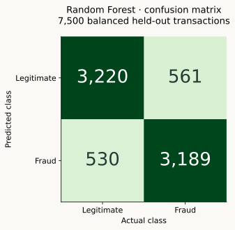
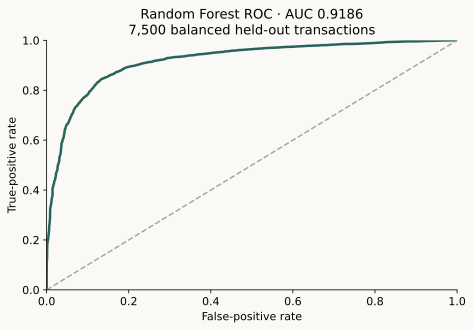

The research question
How can transaction characteristics help identify fraud, while keeping false alerts and missed fraud visible to the analyst?
Data & methodology
A balanced sample of 25,000 transactions, with 12,500 fraud and 12,500 legitimate cases. Ten customer, card and transaction predictors were retained; transaction identifiers were excluded. Raw data remain private.
- Joined transaction, user, card and fraud-label records; parsed monetary fields and sampled each class.
- Used the original numeric category encoding, seed 123 and stratified 70/30 transaction split: 17,500 training and 7,500 test rows.
- Fit the original default Random Forest (500 trees, mtry 3). Evaluated accuracy, fraud recall and ROC AUC separately.
- Used transaction inputs, confusion matrix, variable importance, k-means exploration, elbow plot and cluster summaries in R Shiny.
What the evidence shows
On the 7,500-transaction test set, Random Forest achieves 85.45% accuracy, 85.04% fraud recall and ROC AUC 0.9186. Chip usage, transaction amount and credit limit lead the feature-importance ranking.



Implications
The project demonstrates an interactive workflow for reviewing transaction classifications and customer similarity. It does not establish deployed financial savings or production readiness.
Evaluation boundaries
Balancing preceded a random transaction split. The evaluation does not establish future-time or unseen-customer performance, precision at natural fraud prevalence, or calibrated risk. A named-input fix repairs the original Shiny field-mapping bug without changing model evaluation.
Explore the implementation
The repository contains source code, datasets or retrieval instructions, model results and execution instructions.
View Source Code on GitHub ↗